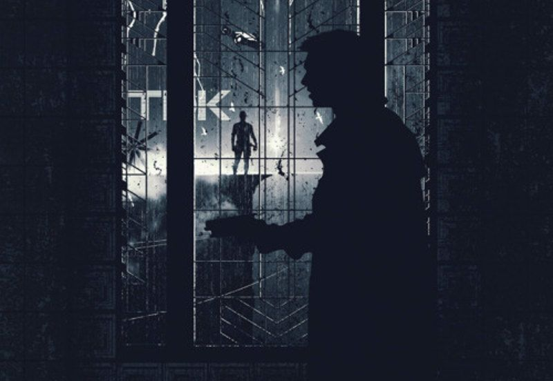

World & Setting
Director Ridley Scott's mesmerising imagery conveys an age of fear and despair, apathy and alienation - a future without a future. Contrary to many classical dystopias, the horrifying message is seldom explicit. Scott utilises the full strenght of the visual media.
What makes the society in Blade Runner so frightening is that it resembles our own. Just like Neuromancer and other cyberpunk dystopias, Blade Runner does not predict change, but escalation. Every negative tendency in our time has been amplified.
Throughout the years, Blade Runner has consolidated its position as the modern archetype of Dystopia. In fact, the dystopian features in the movie can be found in almost every science fiction movie with ambitions today. Judge for yourself...
Environmental collapse #
Blade Runner was not the first dystopian depiction which illustrateted the possible impact of environmental problems, but possibly the most effective.
The scenery conveys a seriously disturbed environment, the subtle horror of approaching apocalypse. The hot and damp weather, the polluted skies, the acid rains - it is evident the environment is near a complete collapse. Mankind has played a game with high stakes and lost - now it is paying the price.
There are many conceivable explanations how this alarming situation may have arised: nuclear, chemical and biological wars, grand-scale terrorism, global warming, merciless exploitation, excessive pollution, exhaustive over-population; probably a combination of them all. The way the Tyrell Corporation and other commercial enterprises are presented in the movie suggests the mega-corporations are to blame, though.
The approaching collapse is a complicated problem, but the solution in the movie is simple: escape Off-world and leave Earth to die in silence. Perhaps we ought to double our efforts in space colonisation today...?
Terminal decay #
Blade Runner's most striking and at the same time most terrifying theme is the decay: omnipresent, irreversible, terminal. The cities are slowly turning into gigantic refuse dumps. The dark streets are filled with old newspapers, rottening fast food dispensers, used gums, cigarette-ends, broken spare parts, electronic junk and kipple. The automatic street-sweepers fight in vain.
All interiors in the movie, with the exception of the luxurious interiors of the Tyrell Pyramid, are filled with gadgetry and junk, some of it evidently several decades old. One come to think of "shortage societies" like the Soviet Union and its satellite states. It seems evident all resources have been allocated to the Off-world colonies and Earth has been left behind, left to die. Cobbled-together mechanics and electronics which once were temporary have become permanent, and there is probably a desperate need of spare parts.
When the decay has gone too far, the standard procedure seems to be to abandon buildings, blocks and possibly even whole districts. Outside the mega-cities, there might be thousands of ghost towns; the workers and farmers are struggling under other suns, several light-years away. J.F. Sebastian's seemingly ordinary line, echoing in the emptiness of the Bradbury Building, might hide a chilling message:
"I live here pretty much alone right now. No housing shortage around here".
Police state tendencies #
Debatedly, the movie conveys a society on the verge of becoming a police state. Blade Runner is flirting with old-fashioned totalitarian dystopias, most notably Nineteen Eighty-four, but only on a superficial level, e.g. the starring eye at the beginning of the movie. Although LAPD hardly can be compared to the Thoughtpolice, the flying squad cars seem to be everywhere, controlling the air and perhaps also monitoring the citizens.
Whether the policemen are the henchmen of the corporations or not, is uncertain, but one thing is sure: they are not servants of the people. The motto of the police does no longer seem to be "to serve and protect", but rather "to control and possibly frighten". The behaviour of the many policemen in the movie is generally quite aggressive and arrogant, and they wear their crypto-fascistic uniforms with authority and pride.
The brutality of the society is perhaps best illustrated with a threatening line by Deckard's commander, Captain Bryant:
"You know the score, pal. If you're not a cop, you're little people."
The nature of the blade runner division, Rep-Detect, is another indicator. Rep-Detect seems to be a semi-secretive police organisation with dubious methods; some theories even suggest that Rep-Detect are involved in dark conspiracies. Blade runners can evidently force citizens to take the replicant detection test, Voight-Kampff, and they are allowed to shoot replicants openly in the streets. When you think about it, a Rep-Detect officer can easily murder any given citizen and claim that s/he was a renegade, dangerous replicant. At least from the replicants point of view, Rep-Detect equals Gestapo.
Then, how come the police has become so powerful? A common theory in dystopian fiction (e.g. Nineteen Eighty-four and Brave New World) is that criminality, corruption, chaos and war entail non-democratic tendencies. This theory has some bearing in reality as well, be it the rise of totalitarian systems, police states and conventional dictatorships. In fact, it is sometimes said that USA already is a kind of police state.
Increased corporate power #
Advertising, most notably neon signs and video billboards, is ever-present. Ironically, the video billboards only seem to advertise foreign products: USA itself has become a victim of junk culture and economic imperialism.
It seems that USA has become utterly commercialised; blatant examples are what looks like open marketing of bodies and narcotics. It seems that consumption is not only the financial foundation of the society, but also the social foundation; on a crude material level even. There is no advertising about movies, music, sports or other kinds of entertainment - only consumer goods. One come to think of the sadly forgotten, yet classic dystopian novel The Space Merchants, debatedly the most brutal capitalistic parody every written.
Consequently, the corporations have increased their power; the executive boards of the mega-corporations may be the real governments of the world. In the cyberpunk tradition, the corporations may even have their own police forces, armies, cities, codes of laws etcetera; we cannot take this for granted in Blade Runner, though. But the corporations do express their power, by adopting neo-aristocratic manners and building monstrous buildings, insipid monuments over soulless commercialism in a dying world.
One may argue that Eldon Tyrell captures the essence of this dystopian society in a few words:
"Commerce is our goal here at Tyrell."
Escalated urbanisation #
Los Angeles is a true mega-city. Perhaps the strong developement towards urbanisation has escalated; perhaps the population is fleeing radiation and anarchy on the countryside. Be that as it may: the urban areas are over-crowded. The logical result of over-population in such a large city would be shortage of living quarters and redundance of manpower: the living and working conditions of the common man might be close to unbearable.
The over-crowded streets display a wide array of ethnicities, nationalities, religions, cultures and sub-cultures. The American society has finally become truly multi-cultural - was it not for the fact it had ceased to be a culture a long time ago.
The streets seem to be dangerous, ruled by police squads and street gangs. Criminality must have become more widespread and more violent; it would explain the police presence. There might even be areas which are veritable war zones, where the police do not dare to go. The vast mazes of dark streets bathing in neon light are true asphalt jungles, well worthy of any film noir classic. A quote from Neuromancer comes to mind:
[The city] was like a deranged experiment in social Darwinism, designed by a bored researcher who kept one thumb permanently on the fast-forward button.
The street dwellers in the movie are apathetic and indifferent. Deckard is assaulted and brutalised by Leon in an alley. Zhora is hunted like an animal through the streets by Deckard, who makes no attempt to conceal his weapon. There are plenty of bypassers and spectators who not only fail to interfere, but even to react at all. The mega-city seem to have killed the inhabitants with its anonymity and gloominess, and vaporised any trace of empathy and compassion in their souls. They have become isolated, barren islands in a frozen ocean of concrete and steel.
Dubious space colonisation programme #
Man has finally reached the stars, but it seems to be a questionable project. The purpose is probably to avoid further over-population and exhaustion of Earth's resources. One may speculate if there is another purpose as well, a semi-conscious one: Man's homeworld cannot be saved and interstellar migration is the only option.
It seems that not everyone can escape the dying Earth: the space colonisation programme might in fact be a crypto-fascistic project. The dialogue between J.F. Sebastian and Pris, concerning his aging disease Metusalem Syndrom, speaks for itself:
Pris: Is that why you're still on Earth?
Sebastian: Yeah, I couldn't pass the medical.
There are many indications the colonisation of space is anything but a happy adventure. In an erly script, Deckard is suspiscious:
"I look at the signs for emigration to the Colonies... If it's really so great Off-world, how come they gotta advertise? If you've got something really good, you keep it a secret. It's only the junk you push."
Deckard definitely looks sceptical when the blimp shouts out the Off-world advertising slogans. These slogans (in fact, the whole message) resemble old-fashioned propaganda in many ways. Earth is in a miserable state, and still they have to market Off-world emigration...?
Even more alarming are the facts about the renegade replicants, which Bryant reveals during his briefing of Deckard. Zhora has been retrained for "political homicide", "Off-world kick-murder squad". Pris is a "basic pleasure model, a standard item for military clubs in the outer colonies". When you think about it, these facts indicates that the Off-world colonies might be completely militarised.
All of the renegade replicants have gone through combat training. It is unlikely that mankind is fighting some alien enemy in the outer colonies; there are no signs of such a war on Earth. Unless, of course, the On-world governments are keeping the war secret from the public. A more plausible explanation is that wars between nations and corporations are raging Off-world.
Dehumanising technology #
A classical dystopian thesis is that technological progress might be hazardous. Few, if any, dystopian depictions explore this thesis more fervently than Blade Runner.
In Blade Runner, advanced technology is profoundly present. It almost seem like the inhabitants of this future society have adapted to the technology, not vice versa: the machines have become subjects instead of objects. Notice the omni-presence of annoying noises, blinking diods, feeding displays and monitors, hissing gauges and sensors, winding piping and circuitry; everyone seems to be acustomed to this never-ending sensory stress. Evidently, the typical dystopian resident in Blade Runner has become completely dependent of advanced technology: in their working places, in their homes; in everyday life. Man has ceased to be a human being, and has become an organic component in a societal machinery.
The most disturbing example of this new era of dehumanising technology is the Voight-Kampff machine. Its threatening, mechanical, vaguely insectile appearance almost speaks for itself. The V-K machine is an advanced polygraph, a lie detector basically. It can determine whether a subject is a human or artificial being, as emotional responses can be measured through involuntary dilatations of the iris and likewise involuntary emissions of pheromones from the epidermis. When you think about it, the very existence of such an apparatus reveals a quite unpleasant view: a human being is an organic machine with a limited array of predictable responses (including psychological responses) which can be measured and categorised.
One can only speculate if this technological evolution has walked hand in hand with a surveillance evolution: are the governments and corporations monitoring and controlling the citizens through the ever-present technology? Some cut-out scenes and footage suggest this, e.g. a geisha on a video billboard who is watching Deckard's and Leon's melee...
A consequence of the accelerated technological evolution is that the user mentally tends to animate the machines. Notice the casual way Deckard gives his Esper verbal commands: it almost sounds like a conversation between working mates. An even more drastic example is J.F. Sebastian's view on his automatons:
"I make friends. They're toys. My friends are toys. I make them. It's a hobby."
Distorted humanity concept #
In Blade Runner, the line between man and machine has not only been blurred, but erased. As artificial beings can be made completely sentient, the mystery and magic of creating life is forever gone; science is now competing with nature and metaphysics. The famous slogan of the Tyrell Corporation holds the new order:
More human than human.
The replicants represents the final frontier, the final phase before man and machine becomes inseperable: these bio-mechanical creations are basically human beings. Yet they are used as slaves, cannon-fodder and prostitutes, treated like property, and hunted like animals. Mankind has taken a huge step backwards, back to the colonial and imperialistic values of the 19th century. The replicant slaves revolt against their masters, but unlike R.U.R. and other traditional robot horror stories, Blade Runner depicts the hopeless struggle of isolated rebels, bound to be hunted down and "retired". There will never be a replicant revolution.
The most tragic vicitim is Rachael: she has been denied an own past, an own identity even. Rachael is an experimental replicant (although one may wonder exactly how experimental) and has been equipped with special brain implants: false memories. After a Voight-Kampff test she has to face the fact that she is not a henchwoman of a corporation, but merely a slave, subject to a cruel experiment; she is not even a human being. In a moment of fear and anguish, Rachael captures her own tragedy in a horryfying line:
I'm not in the business. I am the business.
Hypothetically, everyone can be a replicant. From a philosophical point of view, everyone really is a replicant: just another expendable pawn in the games between mega-corporations and corrupt governments.
"More human than human" has almost become a clichè in science fiction cinema today, but Blade Runner was the first movie which dared to dive into this philosophical abyss. As far as I am concerned, no movie has managed to reach as deep into this abyss as Blade Runner.
Deteroriating morals and ethics #
One of the most interesting aspects of dystopian fiction (and at the same time one of the most elusive aspects) is the distortion or even destruction of morals and ethics. In fact, it is possibly the most importent aspect of dystopian fiction. Illustrative examples are Nineteen Eighty-four and Brave New world.
A theme that leavens all through Blade Runner is the rareness of an essential, human quality: empathy. This is basically the only human attribute replicants lack; thus they are more inclined to act mercilessly or even sadistically. Ironically, this difference is detected with a machine: compassion can be quantified in the year 2019. One may ask if replicants really are unempathetic, though. Maybe the machines are lying? The protagonist, Rick Deckard, is engaged in an inner struggle throughout the movie, as he recognise the human qualities in the replicants he is chasing and killing.
This lack of empathy can be applied on a grander scale. The omni-present police, the corporate fortresses, the over-crowded streets, the decaying buildings - it seems to be evident that USA has become a completely dysfunctional society. It is driven exclusively by the hunger for money and power: the unreflecting egoism has finally triumphed. Perhaps with the exception of the loner J.F. Sebastian, all character in the movie are trying not to get involved in other people's problems; they are not prepared to help a fellow man unless inaction puts them in danger.
This is actually a classical dystopian theme, as well as a classical film noir theme. There is also a political dimension. Blade Runner, and cyberpunk in general, has often been described as criticism against the excesses of Reaganism, and it is not a far-fetched assumption. Be that as it may: in Blade Runner, mankind has lost its compassion and basically ceased to be human.
I think the very symbol of this unhuman world is Roy Batty, the leader of the escaped replicants. His entire life (short, yet intense) he has served his human masters as a soldier: his life has equalled war. When his genetically programmed four year life-span ends, that rainy night on that forsaken roof, in a decaying Los Angeles on a dying Earth, his memories of life's beauty are those of death and destruction:
I've seen things you people wouldn't believe. Attack ships on fire off the shoulder of Orion. I watched C-beams glitter in the dark near the Tanhauser Gate. All those ... moments ... will be lost ... in time. Like ... tears... in rain. Time ... to die.
Indeed, all those moments will be lost in time like tears in rain, whether we are replicants or not.
Written by Niclas Hermansson